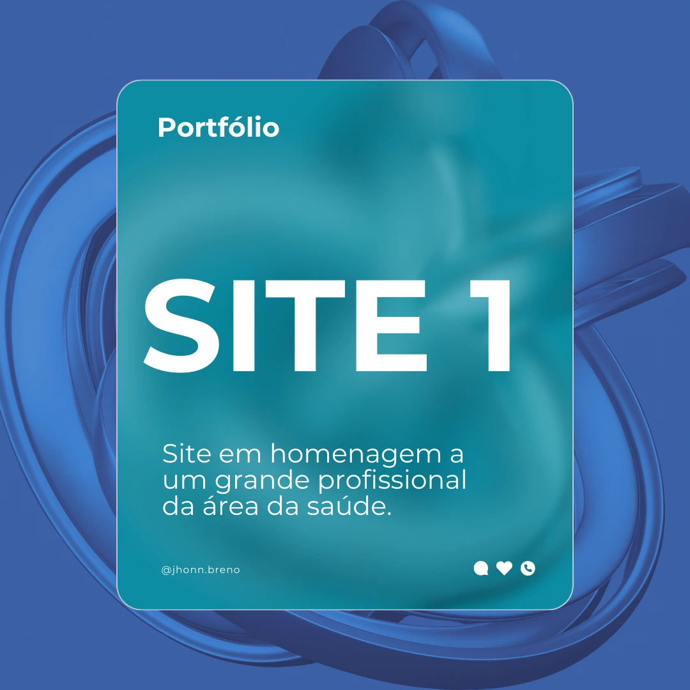
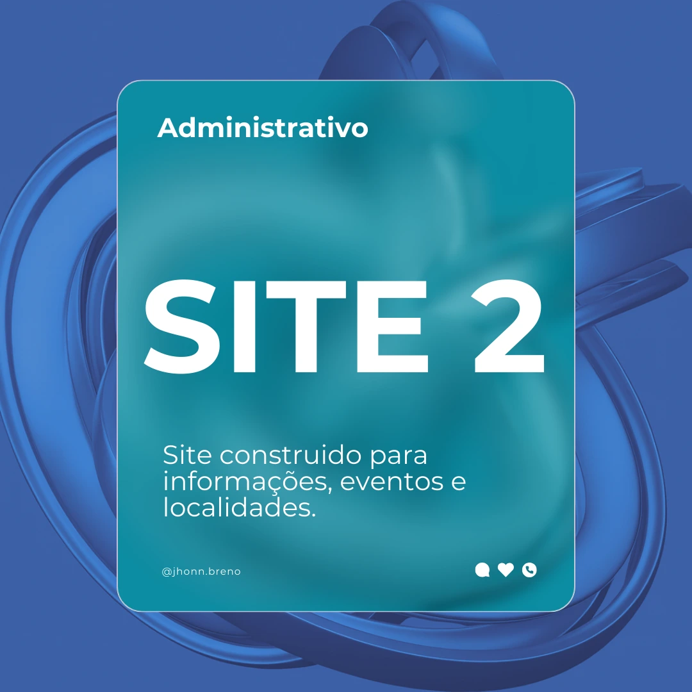
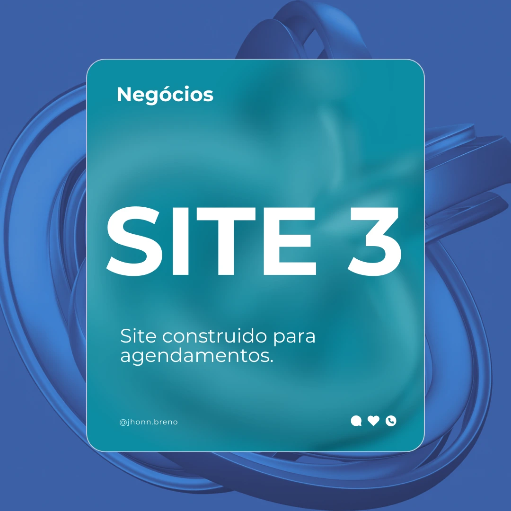

Portifólio

Site de instituição religiosa

"Criei este site para compartilhar minhas habilidades, experiências e a paixão por tecnologia." Currículo
Uma pessoa determinada, comprometida e movida por objetivos claros.
Creio firmemente que a perseverança ininterrupta é a força motriz capaz de transmutar aspirações em conquistas concretas; por essa razão, abraço cada desafio com rigor, disciplina e uma determinação inflexível. No âmbito profissional, atribuo elevado apreço à pontualidade e à responsabilidade — virtudes que me permitem cultivar uma rotina sólida e irrepreensível, da qual me orgulho por jamais ter sido maculada pela ausência. Minha paixão reside no ato de aprender incessantemente, de aprimorar-me e de contribuir para iniciativas que transcendem o trivial, deixando marcas significativas. Quer em colaboração coletiva, quer em atuação autônoma, empenho-me em oferecer o ápice de meu desempenho, com minuciosa atenção aos detalhes e reverência aos prazos estabelecidos. Para mim, o verdadeiro profissionalismo não se restringe ao mero cumprimento de incumbências; ele se revela na integração a um propósito maior, no qual dedicação e sentido se entrelaçam, conferindo dignidade e nobreza ao trabalho realizado.
Acredito que cada projeto é uma oportunidade de crescimento e impacto. Com dedicação, disciplina e atenção aos detalhes, busco transformar ideias em resultados concretos, sempre alinhado aos valores que me movem: responsabilidade, ética e respeito pelo coletivo. Minha trajetória é marcada pela busca constante por excelência, mesmo diante de limitações. Faço o melhor com os recursos disponíveis, ciente de que cada passo bem executado constrói as bases para conquistas maiores. Este portfólio representa não apenas o que eu faço, mas o que acredito é o que estou construindo.
Mais do que alcançar metas, busco construir uma trajetória sólida, estou sempre animado para trabalhar com tecnologias e sempre tento me manter atualizado das novidades no mercado e coloco isso em mente para poder sair do básico e tentar outras coisas. Marcada por propósito, evolução e impacto positivo. Cada desafio é uma oportunidade de crescimento, e cada passo dado com integridade me aproxima de um futuro que reflete não apenas o que conquistei, mas quem me tornei ao longo do caminho.
"Faça o teu melhor, na condição que você tem, enquanto você não tem condições melhores, para fazer melhor ainda!"
- Cortella
A base de toda web, Com HTML consigo estruturar páginas de forma semântica e organizada, garantindo acessibilidade e SEO
Além de usar o css como estilizador eu uso Tailwind e intercalo entre os dois, além de conhecer um pouco de bootstrap
Com o Js consigo fazer com que o User Experience seja melhor e mais confortável para os usuários além de implementar APIs